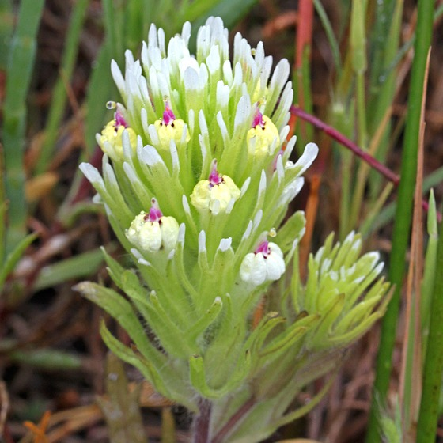
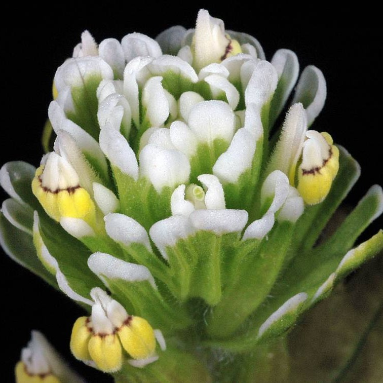

Castilleja ambigua
- Common names
- Johnny-Nip
salt-marsh owl's-clover
- Family
- Orobanchaceae
- Family common name
- Broomrape Family
- Blooms
- March - August
- Habitat
- Coastal saltmarshes.
- Inflorescence color
- Mixture of green, white and yellow. A dense spike of bracts surrounding flowers.
- Stature
- 4-12". Ascending. Stems branched.
- Leaves
- Lower leaves lance-shaped, long, pointed; upper leaves wider, divided intp 3 - 7 lobes with brightly colored or white tips.
- Florets
- Flowers yellow with purple or red tips, or purple with lower tip yellow; beak straight.
Range Map